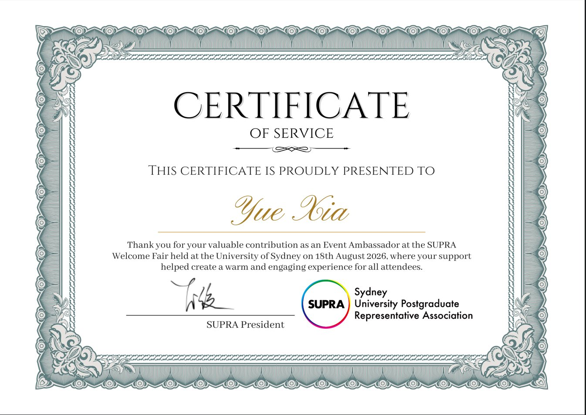

SUPRA 迎新博览会
活动大使 · 2026/08/18 · 悉尼大学
2026 年 8 月 18 日，SUPRA（悉尼大学研究生代表协会）迎新博览会在悉尼大学举行。我作为活动大使参与现场支持，帮助为到场的参与者营造温暖、有参与感的体验，并获得 SUPRA 颁发的服务证书。
01我负责什么
- 担任活动大使，在 2026 年 8 月 18 日的 SUPRA 迎新博览会现场提供支持。
- 帮助为到场的参与者营造温暖、有参与感的体验（证书原文：helped create a warm and engaging experience for all attendees）。
- 以志愿服务中的支持与投入，获 SUPRA 颁发服务证书（Certificate of Service）。
02活动证明

由 SUPRA（Sydney University Postgraduate Representative Association）颁发。点击图片可在新标签页查看原图。